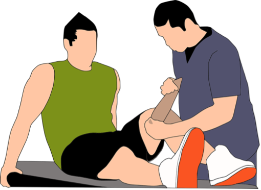
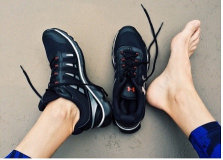

Did you know that athletes can undergo 6 to 14 injuries for every 1000 hours of basketball played?
Basketball is one of the most fast-paced sports and this comes with its consequences. Basketball players are constantly working out every part of their body while enduring physical contact. This can cause a lot of wear and tear on the athletes’ bodies, and it is important that they take the right precautions to assure they are in good condition.
The Most Common Injuries in Basketball
-
Foot and Ankle Injuries:
Ankle Sprain
Plantar Fasciitis
Jones Fracture
Avulsion Fracture
Achilles Tendonitis -
Hip and Thigh Injuries:
Hamstring Strains
Hip Flexor Strains
-
Knee Injuries:
Knee Sprain/Strains
ACL Tear
MCL Tear
Meniscal Tears -
Wrist and Hand Injuries: Sprains and Fractures
Fingers and Wrists Injuries
-
Head/Face Injuries:
Concussions